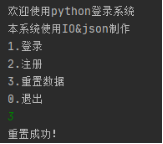

实 验 报 告
学院：计算机科学学院 专业： 计应 2020年6月17日
姓 名 | 学 号 | |||||
班 级 | 指导老师 | 吴晨阳 | ||||
课程名称 | 人工智能基础实践 | 成 绩 | ||||
实验名称 | 系统登录注册功能实现 | |||||
1．实验目的 1. 熟悉Python常用的数据结构 2. 熟悉循环、判断、函数等知识的应用 3. 熟悉系统初始登录注册的思维逻辑 | ||||||
2．实验内容 系统登录注册功能实现 | ||||||
3．实验环境 处理器: AMD Ryzen 7 2700X Eight-Core Processor 3.70 GHz 已安装的内存(RAM): 16.0 GB (7.94 GB可用) 系统类型: 64位操作系统，基于x64的处理器 | ||||||
4．实验方法和步骤（含设计和代码） 普通的登录注册系统的数据都是保存在内存中的，这样程序重新执行就清除数据了，所以这次使用python的io模块和json模块做一个可以存储数据的登录注册系统 整体设计： 因为数据比较简单就不需要创建用户单独的类，只创建一个用户持久层UserDAO 其中包含三个方法： 1. 获取所有用户getalluser： def getAllUser(self): 读取相对路径下的user.txt文件，为只读模式 f = open("users.txt","r") 读取所有的字符串，存入str变量 str = f.read() 将str字符串解析成json对象（list） list = eval(str) 关闭资源 f.close() 将所有用户的list对象返回出去 return list 2. 添加新的用户方法insertuser： def insertUser(self,user): 要添加用户，首先要获取所有用户，直接调用自己（userdao）的getalluser方法 list = self.getAllUser() 向所有用户后面追加上外面传进来的用户 list.append(user) 将新的list列表转成json字符串 jsonstr = json.dumps(list) 通过io模块写入新的文件 f = open("users.txt","w+") f.write(jsonstr) 关闭资源 f.close() 3. 初始化数据方法： def initData(self): 打开文件 f = open("users.txt", "w+") 向文件中写入空列表的字符串 f.write("[]") f.close() 有了userdao之后，对文件的增查方法就封装好了，接下来编写登录功能： def login(): 先输入用户名和密码 print("请输入用户名:") username = input() print("请输入密码:") password = input() 调用userdao的获取所有用户方法 list = userDao().getAllUser() flag为用户是否不存在的标志，默认为真 flag = True 遍历所有用户 for u in list: 如果有用户名和输入的相同的用户 if(u["username"]==username): 先设置标志为假 flag=False 在判断密码是否正确 if(u["password"]==password): print("登陆成功！") else: print("密码错误！") if(flag): print("用户不存在!") 注册功能： def register(): 先输入用户名和密码 print("请输入用户名:") username = input() print("请输入密码:") password = input() 调用userdao的获取所有用户方法 list = userDao().getAllUser() flag为用户是否已经存在的标志，默认为假 flag = False for u in list: 如果出现了相同用户名的用户 if(u["username"]==username) 户已存在就为真了 flag=True break 判断是否已存在标志 if(flag): print("用户已经存在!") else: 如果用户不存在，就调用insertuser方法追加新的用户 u={ "username":username, "password":password } userDao().insertUser(u) print("注册成功！") | ||||||
5．程序及测试结果(运行结果截图) 首先重置数据：  结果： 进行用户注册操作： 结果： 进行登录操作（错误） 登录操作（正确） | ||||||
6．实验分析与体会 人生苦短，我用python。看到python有那么多开放的库，短短几行代码就能搞定一个项目，有点面向对象的经验确实很容易学习。结合了解释性、编译性、互动性和面向对象的脚本语言。它的设计具有很强的可读性，相比其他语言经常使用英文关键字，其他语言的一些标点符号，它具有比其他语言更有特色语法结构。Python 是一种解释型语言: 这意味着开发过程中没有了编译这个环节。类似于PHP和Perl语言。Python 还是交互式语言: 这意味着，可以在一个Python提示符，直接互动执行写程序。它 是面向对象语言: 这意味着Python支持面向对象的风格或代码封装在对象的编程技术。优点如此的多最终我选择了它。 Python3 支持 int、float、bool、complex（复数）。在Python 3里，只有一种整数类型 int，表示为长整型，没有 python2 中的 Long。像大多数语言一样，数值类型的赋值和计算都是很直观的。 实验日期 ： 2020 年 6 月 17 日 | ||||||
教师评语 签名： 年 月 日 | ||||||